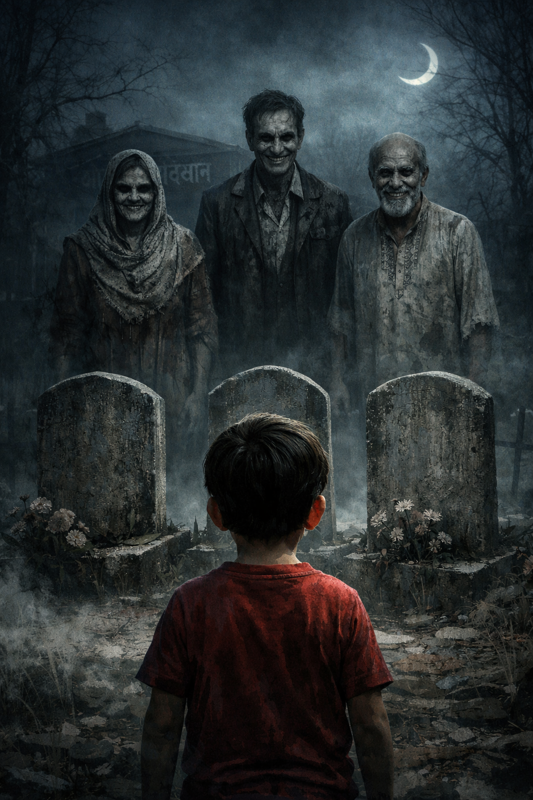

📖 Puri Kahani
🕯️ PART 1 – KABRASTHAN
Is kahani ki shuruaat Rahman family se hoti hai.
Abbu, Ammi aur unka 8 saal ka beta Ayaan.
Rahman family kaafi dino se shehar mein kamra dhoondh rahi thi.
Kabhi rent zyada hota,
kabhi malik family ko dene se mana kar deta.
Roz naye area jaate, roz niraasha milti.
Paise dheere-dheere khatam ho rahe the.
Aakhir ek din unhein shehar se thoda bahar
ek achha, saaf aur naya ghar milta hai.
Do kamre, khuli hawa, proper bijli-paani
aur sabse badi baat — rent bahut kam.
Abbu bina zyada soch-vichaar ke haan kar dete hain.
Shift hote waqt Ayaan peeche mud-mud kar dekhta rehta hai.
Ghar ke bilkul peeche ek kabristan hota hai.
Shaant. Khamosh.
Zyada bada nahi, par kaafi purana.
Ayaan Ammi se dheere se poochta hai,
“Ammi… wahan kaun rehta hai?”
Ammi casually jawab deti hain,
“Bas qabrein hain beta, kuch nahi hota.”
Raat ko ghar bilkul theek lagta hai.
Light chal rahi hai.
TV ki awaaz aa rahi hai.
Sab normal.
Lekin Ayaan ka dhyaan baar-baar
khidki ki taraf ja raha hai.
Use lagta hai jaise
kabristan ke paas koi khada hai.
Wo Abbu se kehta hai,
“Abbu… bahar koi dekh raha hai.”
Abbu mobile se nazar uthaye bina bolte hain,
“Bas tumhara waham hai. So jao.”
Thodi der baad Ayaan phir uth kar baith jata hai.
Uski aankhein bhari hui hain.
Saans tez chal rahi hai.
Ammi se chipak kar bolta hai,
“Ammi mujhe dar lag raha hai.”
Ammi use seene se laga kar kehti hain,
“Naya ghar hai, aadat ho jayegi.”
Ayaan chup ho jata hai…
lekin uski nazar ab bhi
khidki se bahar hi tiki rehti hai.
Kyunki use lagta hai
kabristan mein koi sirf khada nahi hai…
balki use dekh kar muskura raha hai.
Aur maa-baap…
kuch bhi notice nahi karte.
🕯️ PART 2
Subah hoti hai.
Ghar bilkul normal lagta hai.
Dhoop aangan mein hai.
Birds ki awaaz aa rahi hai.
Abbu tayyar ho rahe hain office ke liye.
Unke liye yeh bas ek sasta aur achha ghar hai.
Lekin Ayaan bilkul theek nahi hai.
Wo chup-chap baitha hai.
Uski aankhon ke neeche kaale ghere hain.
Raat bhar jaaga hua lagta hai.
Ammi uske sar par haath rakhti hain.
“Neend poori nahi hui?”
Ayaan dheere se bolta hai,
“Kal raat kabristan mein
kisi ne mera naam liya…”
Ammi ka haath ek pal ke liye ruk jata hai.
Phir wo khud ko sambhal leti hain.
“Tum sapna dekh rahe the,”
wo normal banne ki koshish karti hain.
Abbu hansi mein bolte hain,
“Zyada imagination hai iski.”
Aur baat wahin khatam ho jaati hai.
🌤️ Din ka waqt
Ayaan poore din ghar ke andar hi rehta hai.
Wo bahar khelne se mana kar deta hai.
Ammi notice karti hain
ki wo baar-baar
khidki ke paas jaakar
kabristan ki taraf dekhta hai.
Kabhi kabhi
wo bina bole hi
peeche hat jata hai.
Jaise kuch dekh liya ho.
Ammi ka dil ghabrane lagta hai.
Par wo Abbu ko kuch nahi batati.
🌆 Shaam
Abbu ghar aate hain.
Ammi dheere se bolti hain,
“Ayaan theek nahi lag raha…
shayad kabristan ki wajah se.”
Abbu shrug kar dete hain.
“Ismein darne wali kya baat hai?
Sirf qabrein hi to hain.”
Phir bhi, bachche ke liye
wo decide karte hain
kabristan dekh aane ka.
⚰️ Kabristan (Bilkul Normal)
Kabristan shaant hai.
Koi ajeeb baat nahi.
Qabrein purani hain,
par sab theek-thak lagi hui.
Abbu aaraam se chal rahe hain.
Unke liye yeh bas ek jagah hai.
Ayaan Ammi ke bilkul paas rehta hai.
Uski ungliyan kaanp rahi hain.
Ayaan ek qabr ki taraf dekhta hai…
phir nazar hata leta hai.
Kuch ke baad bolta hai,
“Yahan kal raat
koi khada tha…”
Abbu us qabr ko dekhte hain.
Sab normal.
“Dekha? Kuch nahi hai,”
wo kehte hain.
Kabristan se wapas aate waqt
halki si hawa chalti hai.
Ammi ko lagta hai
jaise kisi ne unke kaan ke paas
saans li ho.
Wo palat kar dekhti hain.
Koi nahi hota.
🌙 Raat
Raat zyada khamosh hai.
TV band ho jata hai.
Light thodi dim lagti hai.
Ayaan achanak uth kar baith jata hai.
“Ammi…
wo phir aa gaya.”
Is baar Ayaan ro nahi raha.
Is baar wo sure hai.
Ammi ka gala sookh jata hai.
Wo kuch bol nahi paati.
Bahaar se koi awaaz nahi.
Bas kabristan ki taraf se
mitti ke girne jaisi halki si awaaz.
Abbu so rahe hain.
Unhein kuch sunai nahi deta.
Ammi Ayaan ko seene se laga leti hain.
Unka dil zor-zor se dhadak raha hai.
Aur tab…
khidki ke sheeshe par
ungliyon ke nishaan dikhte hain.
Andar se.
Ammi ki saans ruk jaati hai.
Wo light jala deti hain.
Nishaan gayab.
Subah tak
Ammi aur Ayaan
bilkul nahi sote.
Abbu ko abhi bhi
kuch pata nahi.
Lekin Ammi jaanti hain…
Kabristan sirf peeche nahi hai.
Wo dheere-dheere
ghar ke andar aa raha hai.
🕸️🕯️ PART 3 – KABRASTHAN
(Subah hoti hai...)
Ammi aur Ayaan dono thake hue lagte hain.
Aankhein laal.
Chehre pe neend nahi, darr jama hua hai.
Abbu ready hote hue poochte hain,
“Raat ko theek se soye nahi kya?”
Ammi seedha jawab nahi deti.
Bas bolti hain,
“Ayaan ko phir darr lag raha tha.”
Abbu gehri saans lete hain.
“Tum dono zyada soch rahe ho.
Jagah nayi hai, bas isliye.”
Wo office nikal jaate hain.
🌤️ Din
Abbu ke jaane ke baad
ghar aur bhi zyada khamosh lagne lagta hai.
Ayaan aaj khidki ke paas bhi nahi jaata.
Wo Ammi ke pallu ko pakad kar baitha rehta hai.
Achaanak wo bolta hai,
“Ammi…
kabristan wale uncle gusse mein hain.”
Ammi ka jism thanda pad jaata hai.
“Kaun uncle?”
Ayaan aankhein band karke kehta hai,
“Jo mitti ke neeche rehte hain.”
Ammi ka dil zor se dhadakta hai.
Wo topic badalne ki koshish karti hain,
lekin Ayaan chup ho jaata hai.
🌆 Shaam – Abbu ka Pehla Dout
Shaam ko Abbu ghar aate hain.
Gate kholte hi wo ruk jaate hain.
Unke jooton par geeli mitti lagi hoti hai.
Wo confuse ho jaate hain.
Aaj barish nahi hui.
Aur wo seedha office se aaye hain.
Ammi kehti hain,
“Hum dono bahar nahi gaye.”
Abbu jooton ko dekhte rehte hain.
Kuch seconds ke liye
unke chehre se confidence gayab ho jaata hai.
Par wo phir bol dete hain,
“Shayad kahin se lag gayi hogi.”
⚰️ Kabristan ki History
Raat ke khane ke baad
Abbu pados ke ek buzurg aadmi se baat karte hain.
Bas casually poochte hain,
“Yeh peeche kabristan kaafi purana lagta hai.”
Buzurg aadmi thoda chup ho jaata hai.
Phir bolta hai,
“Haan… kaafi saal purana hai.”
“Par ab wahan dafnana band hai na?”
Abbu poochte hain.
Buzurg dheere se kehta hai,
“Band to hai…
lekin kuch log kehte hain
wahan sab qabrein poori nahi hoti.”
“Matlab?”
Abbu poochte hain.
Buzurg seedha jawab nahi deta.
Bas itna bolta hai,
“Raat ko wahan zyada der mat rehna.”
Abbu hansi mein baat uda dete hain.
Par unke dimag mein
yeh baat chipak jaati hai.
🌙 Raat – Dar ka Peak (Ammi & Ayaan)
Raat gehri hoti hai.
Ayaan achanak cheekh kar uth jaata hai.
“Ammi!
Wo bol rahe hain ke
yeh ghar unka hai!”
Ammi ka gala sookh jaata hai.
Wo darwaze ki taraf dekhti hain.
Darwaza band hai.
Lekin handle dheere-dheere hil raha hai.
Koi zor nahi.
Bas jaise
koi check kar raha ho.
Ammi Ayaan ko seene se laga leti hain.
Unki aankhon se aansu nikal aate hain.
Wo Abbu ko uthane jaati hain…
Aur tab
Abbu bhi uth kar baith jaate hain.
“Tumne bhi suna?”
wo pehli baar poochte hain.
Ammi bol nahi paati.
Bas sar hila deti hain.
Bahaar se awaaz aati hai —
mitti ko kheenchne ki.
Abbu khidki ke paas jaate hain.
Bahaar kuch nahi dikhta.
Par kabristan ki taraf
ek qabr ki mitti
bilkul nayi lag rahi hoti hai.
Abbu kuch nahi kehte.
Lekin is baar
wo light band karke
wapas sone ki koshish bhi nahi karte.
Unke chehre se
yeh saaf dikh raha hai —
Abhi yaqeen nahi hua hai…
par shak paida ho chuka hai.
Aur Ammi jaanti hain,
jab Abbu ko yaqeen hoga…
tab shayad
bahut der ho chuki hogi.
🩸 FINAL CHAPTER – KABRASTHAN 🩸
Raat aaj zyada andheri hai.
Bijli ja chuki hai. Ghar mein sirf emergency light jal rahi hai. Ayaan Ammi se chipak kar baitha hai.
Wo ro nahi raha.
Is baar wo bilkul shaant hai.
Ammi is shaanti se aur zyada darr rahi hain.
Abbu kamre ke beech khade hain.
Unke haath mein torch hai.
Ab tak wo khud ko samjha rahe the—
logical reasons,
bachche ka darr,
new place.
Lekin aaj…
ghar unhein ghar jaisa lag hi nahi raha.
Achaanak Ayaan bolta hai,
“Abbu…
aaj wo niche nahi hain.”
Abbu poochte hain,
“Phir kahan hain?”
Ayaan seedhi nazar se dekhta hai,
“Ghar ke andar.”
Ammi ka jism kaanp jata hai.
⚰️ Kabristan ka Sach
Abbu faisla kar lete hain.
“Abhi.
Abhi kabristan chal ke dekhte hain.”
Raat ke 3 baj rahe hain.
Teenon torch lekar
ghar ke peeche jaate hain.
Kabristan mein ghusate hi
hawa ruk jaati hai.
Awaaz jaise nigal li gayi ho.
Abbu torch qabron par ghumate hain.
Aur tab
wo dekhte hain.
Teen qabrein…
jin par koi naam nahi likha.
Sirf ek hi cheez common hai —
qabron ke patthar par
ghar ka number khuda hua hai.
Abbu ka torch kaanpne lagta hai.
Pados ke buzurg ki baat yaad aati hai:
“Kuch qabrein poori nahi hoti.”
Ammi bolti hain,
“Poora matlab…?”
Aur tab
kabristan ke andar se awaaz aati hai:
“Jo ghar humse cheena gaya…
use humne wapas liya.”
Mitti hilti hai.
Qabr ka patthar dheere se uthta hai.
Koi haath bahar nahi aata.
Koi chehra nahi.
Bas awaaz.
“Yeh ghar pehle kabristan ka hissa tha.
Zameen badli gayi…
qabrein nahi.”
Abbu peeche hat jaate hain.
Unka logic toot chuka hai.
“Humne sirf rehne ke liye liya tha…”
wo bolte hain.
Awaaz hans padti hai.
Sookhi, khali hansi.
“Zinda hamesha majboor hote hain.
Murde nahi.”
🕯️ Ghar ke Andar
Achaanak emergency light bujh jaati hai.
Ghar ke andar se
qadam chalne ki awaaz aati hai.
Kabristan ke peeche jo qabrein hain…
ab ghar ke andar hain.
Deewar par
mitti ke haath ke nishaan ubhar aate hain.
Ayaan bolta hai,
“Ammi…
yeh wahi uncle hain
jo niche rehte the.”
Abbu cheekh padte hain,
“Bas!
Hum ghar chhod rahe hain!”
Aur tab
ghar ka main darwaza
khud band ho jata hai.
Deewar par likha ubharta hai:
“GHAR CHHODA NAHI JATA.
GHAR POORA KIYA JATA HAI.”
Zameen thandi hone lagti hai.
Jaise niche kuch saans le raha ho.
⚰️ Sach (Final Reveal)
Awaaz bolti hai:
“Har 10 saal mein
kabristan apna hissa wapas leta hai.
Is baar…
tum ho.”
Abbu ghutnon par gir jaate hain.
Unki aankhon se aansu nikal aate hain.
“Bachcha…
use chhod do…”
Kuch seconds ki khamoshi.
Phir awaaz aati hai:
“Bachcha hame dekh sakta hai.
Aur jo hume dekh sakta hai…
wo humara hota hai.”
Ayaan peeche mud kar dekhta hai.
Aur pehli baar
muskurata hai.
Ammi chillati hain.
Ayaan bolta hai,
“Ammi…
mujhe dar nahi lag raha ab.”

🩸 Subah
Subah padosi dekhte hain —
ghar khaali hai.
Darwaza khula hai.
Andar koi nahi.
Sirf ghar ke peeche…
kabristan mein
teen nayi qabrein hain.
Is baar
un par naam likha hua hai.
Aur ghar ke board par likha hai:
KABRASTHAN
“Jo ghar yahan bante hain,
wo sirf zindaon ke liye nahi hote.”